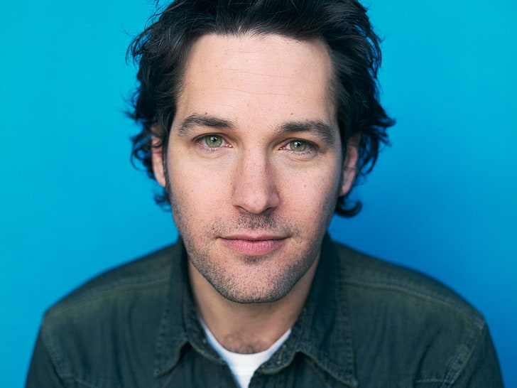
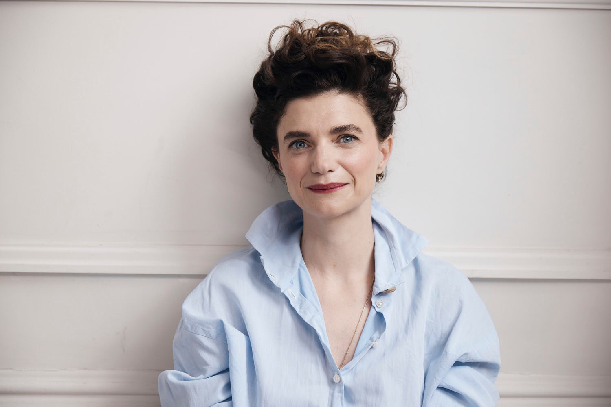

Cast of The Fundamentals of Caring
Ben Benjamin
Portrayed by: Paul Rudd
A down on his luck and out of work writer who's trying to avoid a divorce takes a six-week course to become a registered caregiver. Ben is the type of person to meet someone wherever they're at mentally and emotionally which we're shown when he tells Trevor exactly how he'd wipe his ass. To which, Trevor claims, Ben is the one to be his caregiver. As the story progresses we learn of a traumatic event in Bens past that gives new light to his job decisions. We're truly shown the fundamentals of caring through the lens of Ben. Ben exemplifies what it means to reach the darkest depths of your psyche and to climb out of that pit again.
Trevor
Portrayed by: Craig Roberts
The young charge to our middle aged hero. Trevor suffers from Duchenne Muscular Dystrophy and because of such cannot fully care for himself. He uses an electric wheelchair to get around as he still has use of his hands and arms but not of his legs and, seemingly, parts of his torso. His sardonic and overly sarcastic nature and use of dark humor to combat his reality mesh well with Bens openness and willingness to meet anyone anywhere, which forms the pair as a dynamic duo. Trevor exemplifies what it means to laugh in the face of pain and fear. He finds joy in life despite his setbacks.
Dot
Portrayed by: Selena Gomez
A young hitchhiker running away from her life on the East Coast and aiming for Colorado. A non-descript part of Colorado until later on in the movie where she specifies Denver. She's a mysterious, outgoing, brash and blunt girl. Nearly the antithesis to Trevor. She slowly drags him out of his shell more and more and adds a sort of fearlessness to the group that was lacking prior. Dot exemplifies the importance of having friends that can push you outside your comfort zones.
Peaches
Voiced by: Meghan Ferguson
A sort of comedic relief character in the fact that she is written to draw laughs from the audience. Peaches is a southerner, we're made to assume Floridian, who is pregnant but is not with the father. She wants to move to Denver in order to start a new life, in a new place, where she can raise her child. Peaches gives us a lot of one liners and a lot of anecdotal comedic bits. That being said she also plays one of the most important members of the group. This is because she is the only one who's funny because she's not trying to be funny. Trevor and Ben are funny because that's their way of relating, that's how they communicate. Same for Dot most of the time. But Peaches isn't written to be a joke teller, she's written to appear as a joke. Peaches is in fact, however, the most important character as she exmplifies the most important trait amongst our party. Peaches exemplifies what it means to give everything up for the betterment of someone you care about, in her case her unborn child. She also further goes on to serve as a symbol of revelation and causes a change in dynamic.
Elsa

Portrayed By: Jennifer Ehle
While not in the film for any extended amount of time, Elsa does play an important role as the mother of Trevor. She constantly checks in on him during their trip through Ben. She serves as the omnipotent force of the movie (even though she isn't omnipotent). What I'm refering to by that is that she knows Ben and Trevor are a good pair. She's the force in the movie that drives the action. She allows Trevor to take his trip, she allows Ben to care for her son. Her constant check ins serve to show the love that Trevor has had growing up, he's not some destitute kid who was mismanaged at a young age, he has a loving and caring mother. But no father. This is why Elsa is sort of important. She gives us a lot of background detail through her existence and character. Elsa exmeplifies what it means to put someone else first and to truly 'care'.